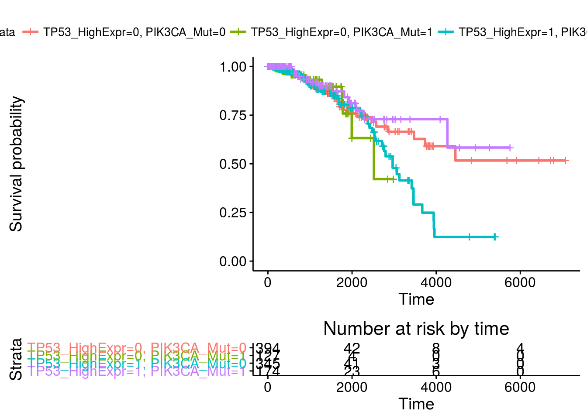

library(dplyr)
# devtools::install_github('hadley/dplyr')source("https://bioconductor.org/biocLite.R")
biocLite('RTCGA.rnaseq')
biocLite('RTCGA.clinical')
biocLite('RTCGA.mutations')The Cancer Genome Atlas (TCGA) is a comprehensive and coordinated effort to accelerate our understanding of the molecular basis of cancer through the application of genome analysis technologies, including large-scale genome sequencing.
library(RTCGA.rnaseq); data(BRCA.rnaseq) # information about genes' expressions
library(RTCGA.mutations); data(BRCA.mutations) # information about genes' mutations
library(RTCGA.clinical); data(BRCA.clinical) # patients' clinical data
BRCA.rnaseq %>%
select(`TP53|7157`, bcr_patient_barcode) %>%
# bcr_patient_barcode contains a key to merge patients between various datasets
rename(TP53 = `TP53|7157`) %>%
filter(substr(bcr_patient_barcode, 14, 15) == "01" ) %>%
# 01 at the 14-15th position tells these are cancer sample
mutate(bcr_patient_barcode = substr(as.character(bcr_patient_barcode),1,12)) ->
# in clinical info bcr_patient_barcode is only of length 12
BRCA.rnaseq.TP53
BRCA.mutations %>%
select(Hugo_Symbol, bcr_patient_barcode) %>%
# Hugo_symbol tells to which gene the row corresponds.
# Ff the rows exist for a gene, this means there was a mutation for this patient for this gene.
filter(nchar(bcr_patient_barcode)==15) %>%
# sometime there are inproper lengths of this code
filter(substr(bcr_patient_barcode, 14, 15)=="01") %>%
# 01 at the 14-15th position tells these are cancer sample
filter(Hugo_Symbol == 'PIK3CA') %>%
# we are interested only in the mutations of PIK3CA
unique() %>%
# sometimes there are few mutations in the same gene
mutate(bcr_patient_barcode = substr(as.character(bcr_patient_barcode),1,12)) ->
# in clinical info bcr_patient_barcode is only of length 12
BRCA.mutations.PIK3CA
BRCA.clinical %>%
select(patient.bcr_patient_barcode,
patient.vital_status, # information whether patient is still alive
patient.days_to_last_followup, # how many days has patient been observed if he is alive
patient.days_to_death) %>% # how many days has patient been observed if he has passed away
mutate(bcr_patient_barcode = toupper(as.character(patient.bcr_patient_barcode))) %>%
# in clinical datasets the key column is in lower case and with different name
mutate(status = ifelse(as.character(patient.vital_status) == "dead",1,0),
times = ifelse(
!is.na(patient.days_to_last_followup),
as.numeric(as.character(patient.days_to_last_followup)),
as.numeric(as.character(patient.days_to_death))
)) %>%
# if the patient does not have a days_to_last_followup time this means
# he has days_to_death time
filter(!is.na(times)) %>%
# sometime patient does not have any time
filter(times > 0) -> BRCA.clinical.survival
# sometimes by mistkae patients have non-positive times (few cases)
BRCA.rnaseq.TP53 %>%
left_join(y = BRCA.mutations.PIK3CA,
by = "bcr_patient_barcode") %>%
left_join(y = BRCA.clinical.survival,
by = "bcr_patient_barcode") %>%
mutate(TP53_HighExpr = ifelse(TP53 >= median(TP53), "1", "0")) %>%
mutate(PIK3CA_Mut = as.integer(!is.na(Hugo_Symbol))) %>%
select(times, status, TP53_HighExpr, PIK3CA_Mut) -> BRCA.2survfit
dim(BRCA.2survfit)## [1] 1093 4BRCA.2survfit %>%
group_by(TP53_HighExpr, PIK3CA_Mut, status) %>%
summarise(counts = n()) %>%
arrange(desc(counts))## Source: local data frame [12 x 4]
## Groups: TP53_HighExpr, PIK3CA_Mut [4]
##
## TP53_HighExpr PIK3CA_Mut status counts
## (chr) (int) (dbl) (int)
## 1 0 0 0 359
## 2 0 0 1 35
## 3 0 0 NA 18
## 4 0 1 0 118
## 5 0 1 1 9
## 6 0 1 NA 7
## 7 1 0 0 298
## 8 1 0 1 47
## 9 1 0 NA 18
## 10 1 1 0 161
## 11 1 1 1 13
## 12 1 1 NA 10BRCA.2survfit %>%
group_by(TP53_HighExpr, PIK3CA_Mut) %>%
summarize(min = min(times),
median = median(times),
mean = mean(times),
max = max(times))## Source: local data frame [4 x 6]
## Groups: TP53_HighExpr [?]
##
## TP53_HighExpr PIK3CA_Mut min median mean max
## (chr) (int) (dbl) (lgl) (dbl) (dbl)
## 1 0 0 NA NA NA NA
## 2 0 1 NA NA NA NA
## 3 1 0 NA NA NA NA
## 4 1 1 NA NA NA NAlibrary(survminer)
library(survival)
fit <- survfit(Surv(times, status) ~ TP53_HighExpr + PIK3CA_Mut,
data = BRCA.2survfit)
ggsurvplot(fit, theme = theme_RTCGA(), p.val = TRUE, risk.table = TRUE)## Warning in if (value %in% columns) {: the condition has length > 1 and only
## the first element will be used
This dataset represents a set of possible advertisements on Internet pages. The features encode the geometry of the image (if available) as well as phrases occuring in the URL, the image’s URL and alt text, the anchor text, and words occuring near the anchor text. The task is to predict whether an image is an advertisement (“ad”) or not (“nonad”).
Wymiary: 3279 X 1558